![Woodcut-style title slide in landscape orientation. A massive atomic mushroom cloud dominates the center, glowing in gold against heavy black ink textures. Surrounding it in collage form are stark scenes: an industrial prison compound with barbed wire and watchtower, V-2 rockets in an underground tunnel, a courtroom with a lone figure at a podium, and a gallows looming over shadowed figures. Bold grain lines unify the composition. The title The Bomb and the Gallows spans across the center over the explosion.](images/ch26_lec3_title_slide.png)
The Context — Total War by August 1945
- Iwo Jima and Okinawa — combined American dead: 19,000+; Japanese military dead: 132,000+; Okinawan civilians: up to 150,000
- Operation Meetinghouse (March 9–10, 1945) — 279 B-29s firebomb Tokyo; 80,000–100,000 civilians killed in one night; more than the immediate deaths at Hiroshima
- By August 1945, the U.S. had firebombed 67 Japanese cities — the threshold of deliberate mass civilian killing had already been crossed many times over
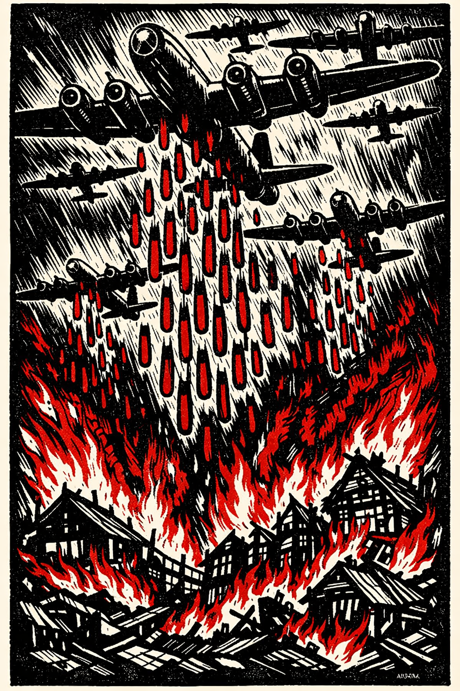
Firebombing of Tokyo · March 1945 · AI-generated woodcut illustration · HIST 102
Operation Downfall:
The Planned Invasion of Japan
Projected Allied casualties:
up to one million (including up to 500,000 dead)
Projected Japanese deaths:
up to ten million (military + civilian)
- Scheduled start: November 1, 1945 (Olympic) → March 1946 (Coronet)
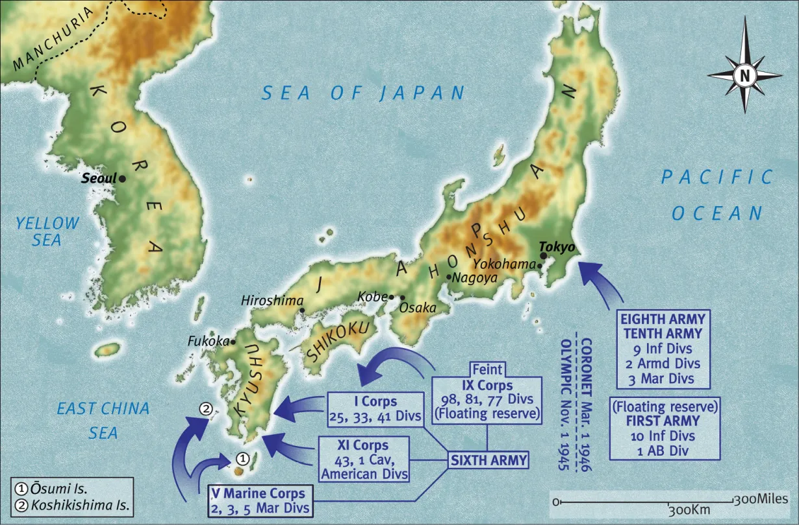
Operation Downfall · Planned Allied Invasion of Japan · 1945–1946 · HIST 102
Section I
Military weapon, political signal, and moral rupture
The Manhattan Project
- Authorized 1942 — triggered by intelligence that Nazi Germany was pursuing nuclear weapons
- ~130,000 workers at Oak Ridge, Hanford, and Los Alamos; cost equivalent to ~$30 billion today
- Scientific leadership under J. Robert Oppenheimer — many were European Jewish refugees who had fled Nazi persecution
- Trinity test — July 16, 1945, Alamogordo, New Mexico: yield equivalent to ~20 kilotons of TNT
- Leo Szilard's petition — 69 scientists urged Truman not to use the bomb against Japanese cities without warning; suppressed by project security
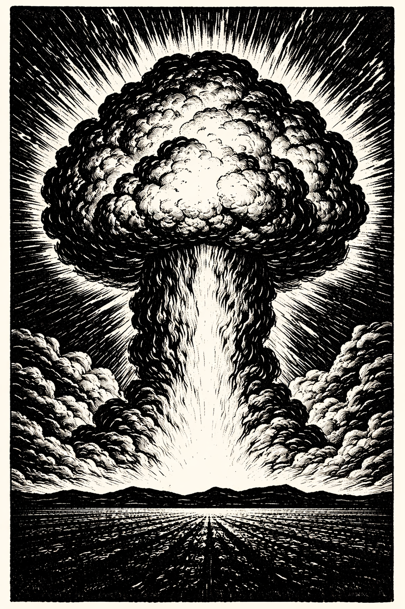
Trinity Test Fireball · July 16, 1945 · AI-generated woodcut illustration · HIST 102
Hiroshima and Nagasaki — August 1945
- Enola Gay drops "Little Boy" — uranium gun-type device
- Detonates at ~1,900 feet above city center
- ~70,000–80,000 killed immediately
- ~140,000 dead by end of 1945 including radiation sickness deaths
- ~5 square miles destroyed
- "Fat Man" — plutonium implosion device
- ~40,000 killed immediately
- ~70,000 dead by year's end
- August 15 — Emperor Hirohito announces surrender, citing a weapon of "new and most cruel" character
- Hirohito never names the weapon — or acknowledges Japanese aggression
The Gap Between Rhetoric and Reality
The Decision — Three Dimensions
- End the war without the catastrophic casualties of Operation Downfall
- Primary in official justification; most widely accepted by American public
- Japan already seeking negotiated surrender through Soviet intermediaries
- Signal American power to the Soviet Union as Cold War order crystallized
- Alperovitz thesis — bombs dropped primarily to intimidate Soviets, not to end the war
- Truman knew Soviet entry into the Pacific War was imminent
- Deliberate destruction of two civilian cities with weapons of mass destruction
- No warning to civilians; no demonstration on uninhabited target
- Neither bombing was ever placed before any international tribunal
⏸ Pause & Reflect
By August 1945 the United States had already firebombed 67 Japanese cities. Operation Meetinghouse killed more people in one night than the immediate deaths at Hiroshima.
At what point — if any — does the atomic bomb constitute a qualitatively different moral act from the conventional bombing that preceded it?
Does the scale of the weapon matter — or only the scale of the killing?
Section II
For the first time in history, the leaders of a defeated state would be tried — not shot
The Innovation of Accountability
- The decision to try — not summarily execute — Nazi leadership was not inevitable; Stalin proposed shooting 50,000 German officers
- American insistence driven by Henry Stimson and Robert Jackson — a trial would create a legal record, establish precedents, and demonstrate the Allied cause operated by different principles
- Convened at Nuremberg Palace of Justice, November 20, 1945 — deliberately chosen; site of the great Nazi party rallies
- Four new categories of charge: conspiracy, crimes against peace, war crimes, crimes against humanity
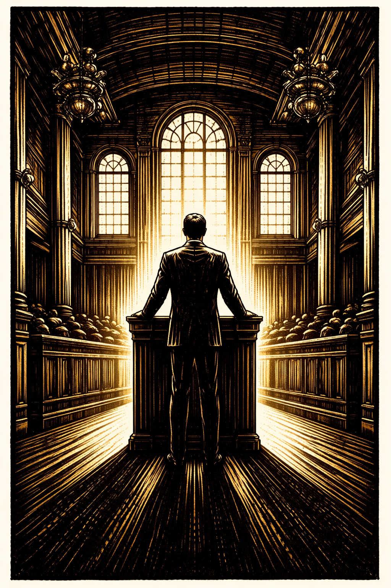
Justice Robert H. Jackson · Nuremberg Chief Prosecutor · AI-generated woodcut illustration · HIST 102
The Defendants and Verdicts
- 24 major defendants — Göring, Ribbentrop, Keitel, Kaltenbrunner, Frank, Rosenberg, Streicher, Hess and others
- Prosecutors present 100,000+ captured German documents, concentration camp film footage, and survivor testimony
- Verdicts handed down October 1, 1946 — 12 death sentences, 3 life sentences, 4 prison terms, 3 acquittals
- Göring cheats the gallows — swallows a cyanide capsule the night before execution; the remaining 11 are hanged on October 16, 1946
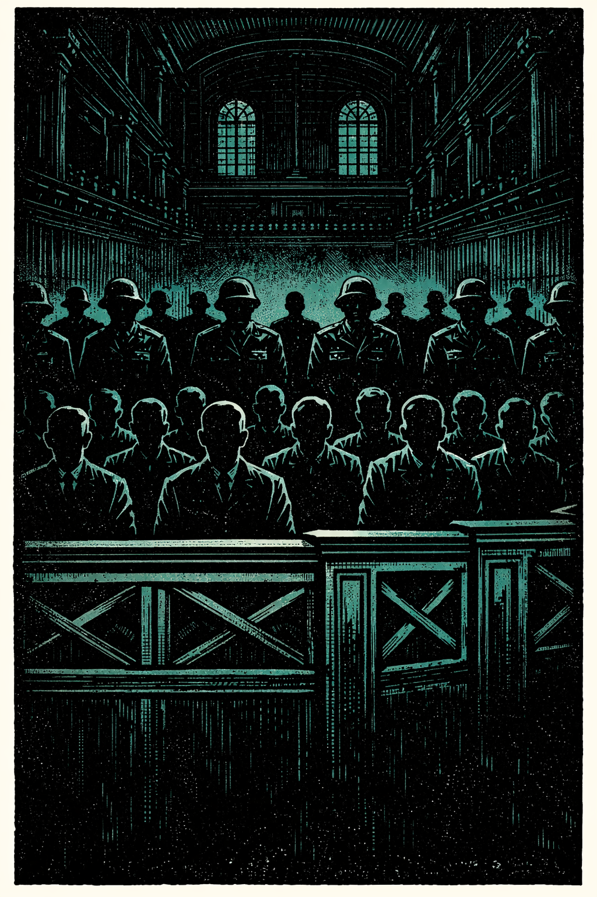
Nuremberg Trials · 1945–46 · AI-generated woodcut illustration · HIST 102
Jackson's Opening Statement
⏸ Pause & Reflect
The Soviet Union — which had invaded Poland, occupied the Baltic states, and conducted its own mass atrocities — sat as a co-equal judge at Nuremberg.
Can a proceeding be politically compromised and historically legitimate at the same time?
Does the presence of a guilty judge invalidate a verdict against a guilty defendant?
Section III
The most consequential decision about the Tokyo Trial was made before it began
The Tokyo Trial — Structure and Verdicts
- International Military Tribunal for the Far East — May 1946 to November 1948; 28 Class-A defendants before an eleven-nation panel
- Same four charge categories as Nuremberg; prosecution covered aggression from Manchuria 1931 through the Pacific War — Nanking, Bataan, Comfort Women, POW abuse all documented
- 7 sentenced to death — including former Prime Minister Hideki Tojo and General Iwane Matsui, commander during the Rape of Nanking; hanged December 23, 1948
- 16 received life sentences; 2 died during proceedings; 1 found mentally unfit
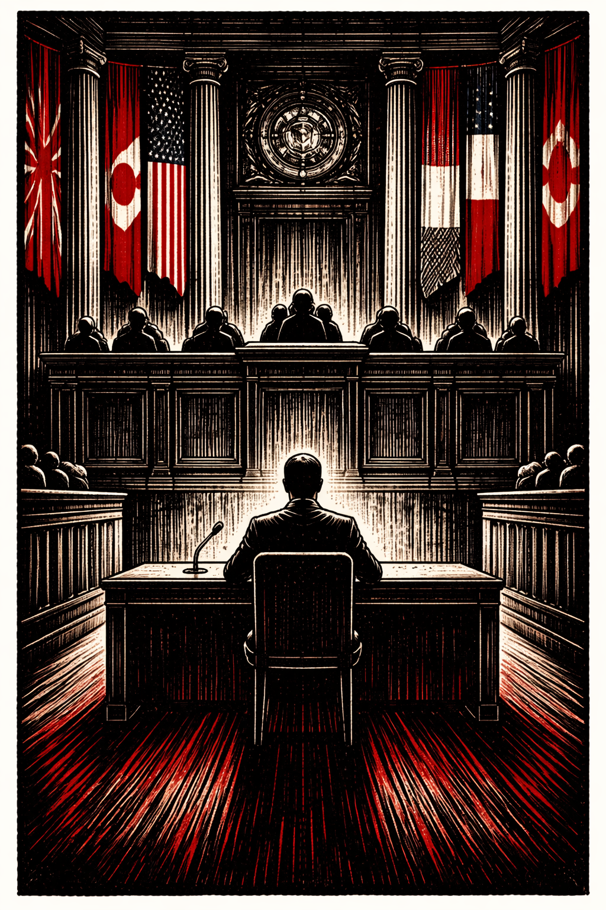
Hideki Tojo at the Tokyo Tribunal · 1946 · AI-generated woodcut illustration · HIST 102
The Deliberate Shielding of Emperor Hirohito
- MacArthur's calculation: prosecuting Hirohito would destabilize Japan, provoke resistance to occupation, and create conditions favorable to communist revolution — Washington agreed
- Herbert Bix's Hirohito (2000) — documented Hirohito's active involvement in military planning, personal approval of orders that led to atrocities, and awareness of the biological warfare program
- The "passive emperor" narrative was a political construction — not a historical description
- Hirohito continued to reign until his death in 1989 — received state visits from American presidents; was never required to account for anything
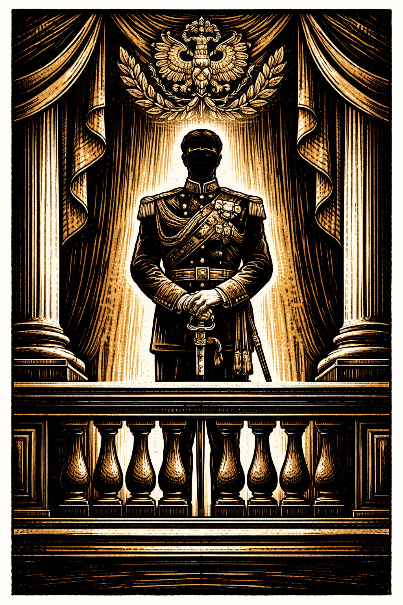
Emperor Hirohito · AI-generated woodcut illustration · HIST 102
⏸ Pause & Reflect
MacArthur shielded Hirohito from prosecution to stabilize Japan as a Cold War ally. Hirohito reigned for forty-four years after the war and died without ever being required to account for his role in it.
Does the stability that decision produced vindicate the compromise of accountability?
What was the cost — to Japanese historical memory, to Chinese and Korean victims, to the Nuremberg principle that heads of state are personally accountable?
Section IV
Cold War logic versus the principle of accountability
Unit 731 — Immunity for Data
- Unit 731 conducted lethal experiments on an estimated 3,000+ prisoners — vivisection without anesthesia, deliberate plague and cholera infection, frostbite and pressure experiments
- Field deployment of biological weapons against Chinese civilian populations — plague-infected flea bombs caused outbreaks killing an estimated 200,000–300,000
- 1947 — MacArthur authorizes secret immunity deal: full protection from prosecution for Ishii and his entire staff in exchange for research data shipped to Fort Detrick
- Unit 731 scientists returned to civilian life; several had distinguished postwar careers in Japanese medicine — existence suppressed until the 1980s
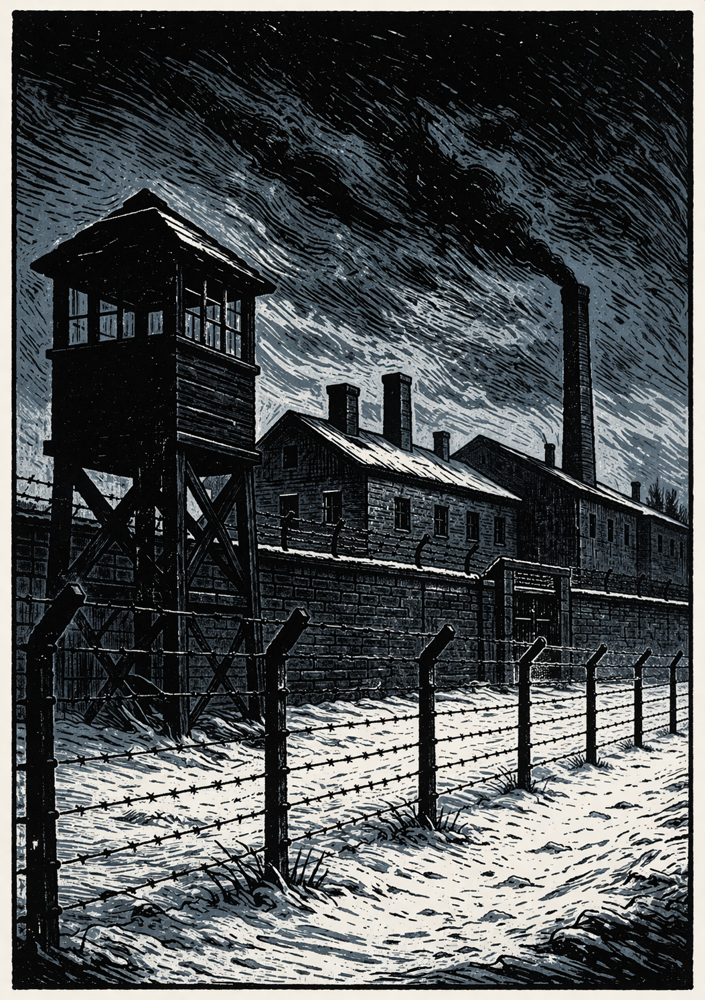
Unit 731 Facility · Harbin, Manchuria · AI-generated woodcut illustration · HIST 102
Operation Paperclip — Nazi Scientists in America
- Secret U.S. program recruited 1,600+ German scientists, engineers, and doctors after the war — many with direct involvement in war crimes; SS records sanitized or suppressed
- Wernher von Braun — SS officer; designer of the V-2 missile; production at the Mittelwerk factory killed ~20,000 concentration camp laborers through starvation and overwork
- Von Braun arrived in the U.S. with 100+ colleagues, became director of NASA's Marshall Space Flight Center, architect of the Saturn V rocket
- Received the National Medal of Science (1975); never tried for anything
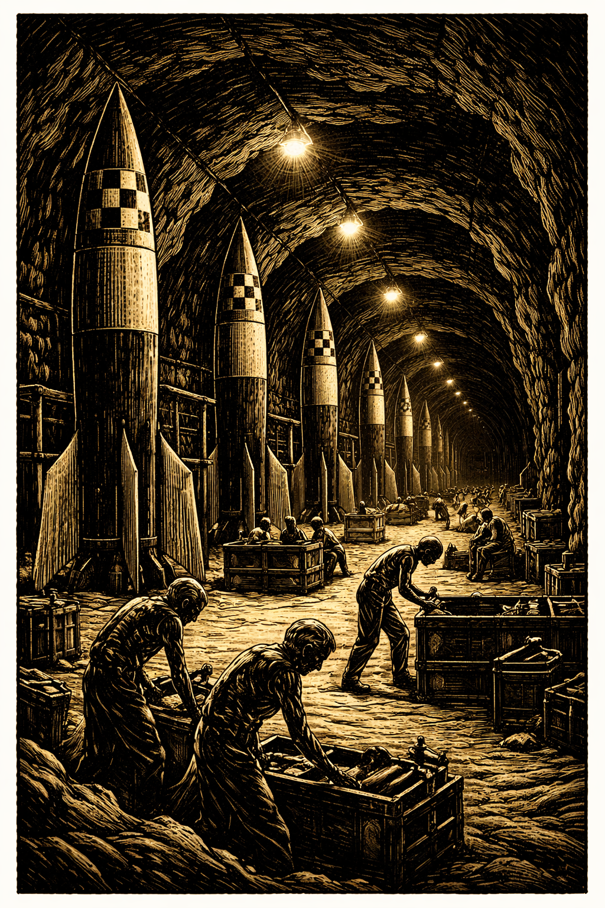
Mittelwerk V-2 Factory · Nordhausen · AI-generated woodcut illustration · HIST 102
Ratlines — The Long Escape
- Ratlines — escape routes to South America operating through Catholic clergy, fascist networks, and forged International Red Cross travel documents
- Adolf Eichmann — escaped to Argentina as "Ricardo Klement"; lived there 15 years before Mossad kidnapping in 1960; tried and hanged 1962
- Josef Mengele — escaped to Argentina 1949; moved to Paraguay, then Brazil; died of a stroke while swimming in 1979; never tried
- Klaus Barbie — "Butcher of Lyon"; escaped to Bolivia with U.S. intelligence assistance as an anti-communist asset; not extradited to France until 1983; convicted 1987
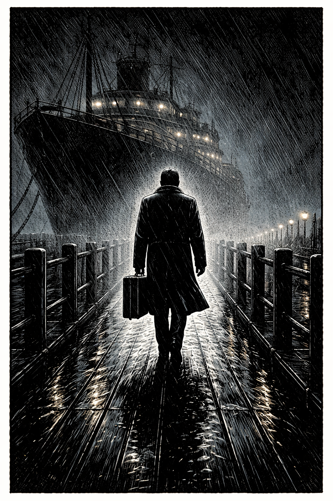
The Escape · Ratlines to South America · AI-generated woodcut illustration · HIST 102
Who Escaped — and How
- Emperor Hirohito — MacArthur's shielding; reigned until 1989
- Shirō Ishii (Unit 731) — immunity for research data; never tried
- Wernher von Braun — Operation Paperclip; NASA director; National Medal of Science
- Klaus Barbie — U.S. intelligence asset; extradited 1983
- Adolf Eichmann — Argentina; captured 1960; hanged 1962
- Josef Mengele — Argentina, Paraguay, Brazil; died 1979; never tried
- Countless mid-level perpetrators — camp guards, POW executioners, comfort station operators — largely untouched
- Cold War rehabilitation of convicted criminals began within years of verdicts
⏸ Pause & Reflect
The United States prosecuted Nazi war criminals at Nuremberg and simultaneously recruited Nazi rocket engineers whose work was built by slave labor. It granted immunity to Unit 731 scientists for their research data.
What principle governed these decisions — or is the only honest answer that power, not principle, determined who was held accountable?
Section V
What happens when historical revisionism is built into sacred architecture?
Yasukuni Shrine — The 1978 Enshrinement
- Yasukuni Shrine — Shinto facility enshrining ~2.5 million war dead; those enshrined become kami — divine spirits; enshrinement is irreversible
- October 1978 — chief priest quietly enshrines 14 Class-A war criminals from the Tokyo Trial, including Hideki Tojo — done without public announcement, without government knowledge
- In Shinto terms, the convicted war criminals are no longer war criminals — they are gods
- Criticism of them becomes equivalent to insulting divine beings
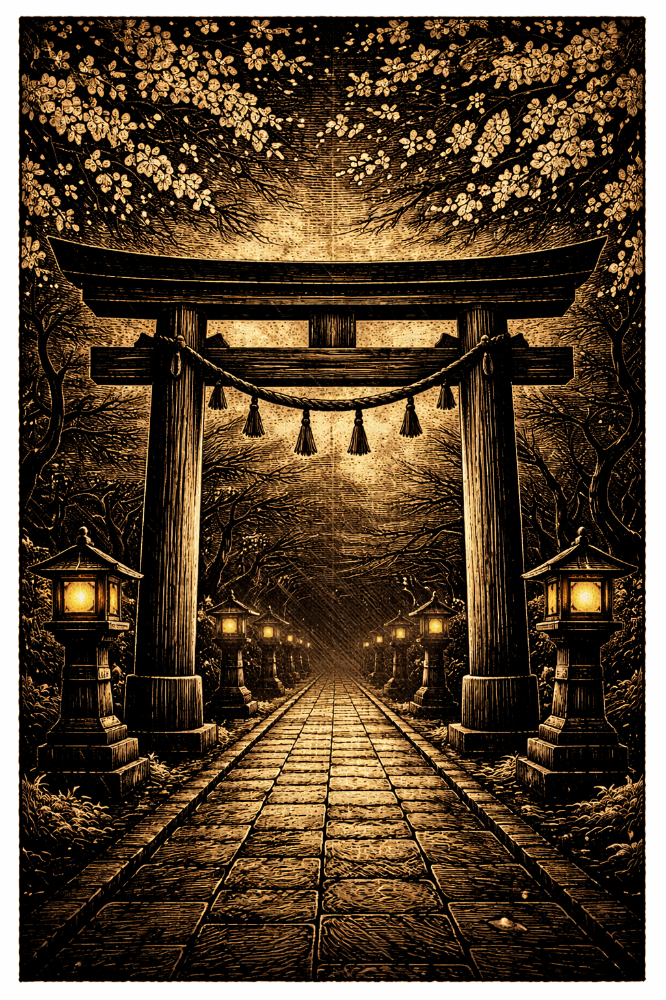
Yasukuni Shrine · Tokyo · AI-generated woodcut illustration · HIST 102
The Politics of Memory — Shrine Visits
- Post-1978 official visits by Japanese prime ministers carry the unavoidable implication of paying respects to convicted war criminals
- Nakasone (1985) — first official PM visit after enshrinement; mass protests in China; formal diplomatic protests from China and South Korea
- Koizumi (2001–2006) — visited annually; triggered diplomatic crises damaging Japan's relationships with its two largest Asian neighbors each year
- Abe (2013) — China described it as the worst bilateral crisis since diplomatic normalization
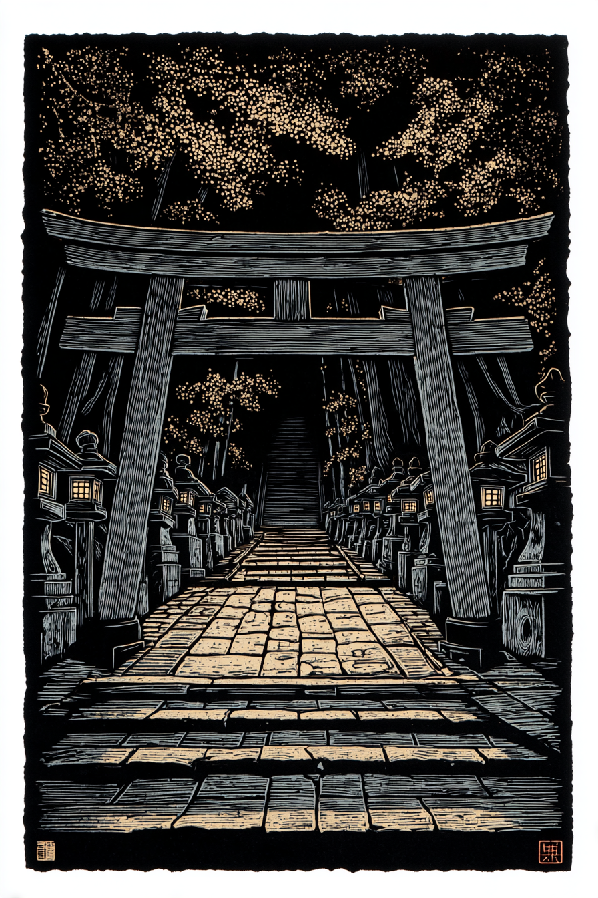
Yasukuni Shrine · Tokyo · AI-generated woodcut illustration · HIST 102
⏸ Pause & Reflect
Enshrinement at Yasukuni makes Class-A war criminals into divine spirits. Japanese prime ministers who visit argue they are honoring all war dead, not specifically the war criminals.
Is it possible to honor a nation's war dead while acknowledging that the war they fought was criminal?
Or does the enshrinement of war criminals make that distinction impossible to maintain?
Section VI
Genuine moral achievement — and its permanent structural compromise
What Nuremberg and Tokyo Achieved
- Nuremberg Principles (1950) — aggression is an international crime; crimes against humanity are prosecutable regardless of domestic law; heads of state have no sovereign immunity; following orders is not a defense
- Evidentiary record of 100,000+ pages — established facts about the Holocaust and the planning of aggressive war that might otherwise have been denied
- Direct legal foundation for the Genocide Convention (1948), Universal Declaration of Human Rights (1948), ICC (2002)
- Principle that civilization cannot survive the repetition of these crimes — genuine moral commitment with real institutional consequences
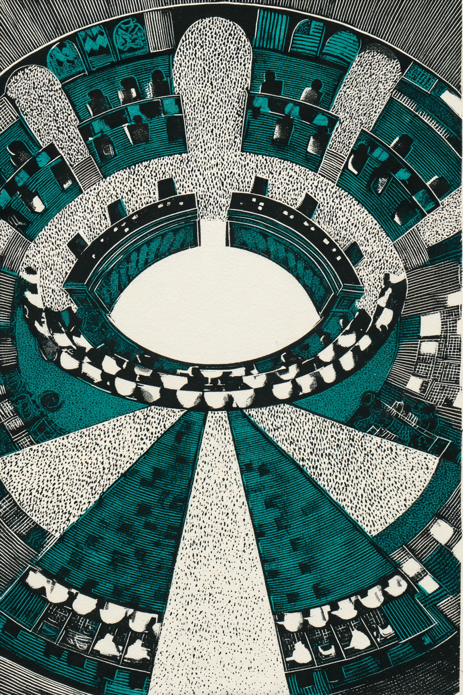
International Criminal Court · The Hague · AI-generated woodcut illustration · HIST 102
What Nuremberg and Tokyo Failed to Achieve
- The same powers that sat in judgment had firebombed Dresden, Tokyo, Hamburg — operations prosecutable under the crimes against humanity logic if committed by the losing side
- The atomic bombings of Hiroshima and Nagasaki — deliberate destruction of civilian cities with weapons of mass destruction — were never placed before any tribunal
- Soviet judges had personally supervised the Katyn Forest massacre and Baltic atrocities
- "Victors' justice" is not merely a cynical deflection — it describes a real structural feature that fundamentally compromises the claim to universal legal principle
- Mid-level perpetrators — camp guards, POW executioners, comfort station operators — largely untouched
- Cold War rehabilitation of convicted criminals began within years; by early 1950s, Western powers were restoring war criminals to authority in the new German and Japanese states
- Key Japanese atrocity documentation suppressed by occupation authorities
- Hirohito, Ishii, von Braun — accountability stopped at the level of convenience
The Permanent Condition of International Justice
- The International Criminal Court (2002) — direct institutional descendant of Nuremberg; has prosecuted leaders from African states and the former Yugoslavia
- The permanent members of the UN Security Council — the United States, Russia, and China — have never submitted to ICC jurisdiction
- The United States has actively opposed ICC investigations of American personnel
- The pattern is not new — it is structural: power determines who is held accountable, even when accountability mechanisms are genuine
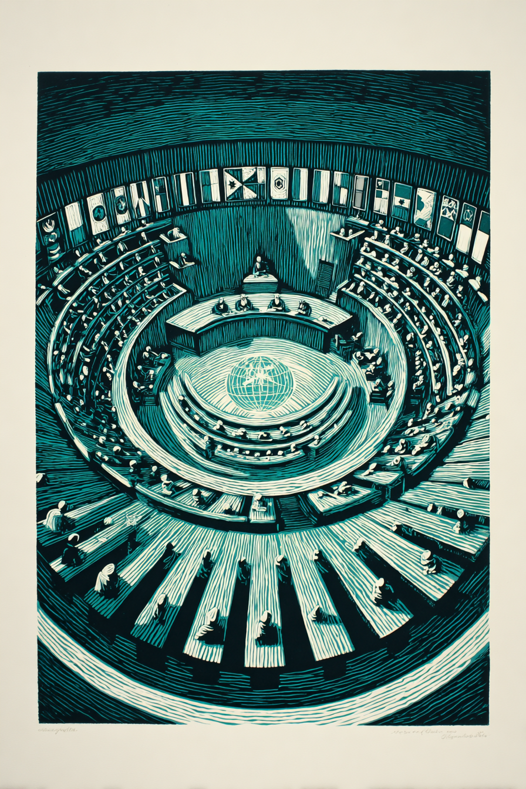
International Criminal Court · The Hague · AI-generated woodcut illustration · HIST 102
⏸ Pause & Reflect
Nuremberg tried some perpetrators while protecting others. The ICC prosecutes African leaders while the Security Council's permanent members operate outside its jurisdiction.
Is partial justice better than no justice — or does it legitimize the underlying structure of impunity by providing it with a legal facade?
Your answer matters — not only for 1945, but for every subsequent crisis in which the international community must decide whether to pursue accountability.
Iwo Jima (February–March 1945): 6,821 Americans killed, nearly 20,000 wounded in 36 days of combat on an eight-square-mile volcanic island. Of 22,000 Japanese defenders, only 216 were taken prisoner; the remainder died fighting or committed suicide. The photograph of Marines raising the flag on Mount Suribachi became the most reproduced image of the Pacific War — taken during a battle that cost more Marine casualties than any other in the Corps' history.
Okinawa (April–June 1945): The largest amphibious assault in the Pacific War. More than 12,000 American military personnel killed; approximately 110,000 Japanese military dead; between 42,000 and 150,000 Okinawan civilians who perished in the crossfire, in Japanese-coerced mass suicides, and from starvation and disease. Kamikaze attacks sank or damaged hundreds of American ships. The battle lasted 82 days and confirmed for American planners that an invasion of the Japanese home islands would produce casualties on an unprecedented scale.
Operation Downfall was the Allied plan for the invasion of the Japanese home islands, scheduled to begin November 1945 (Operation Olympic, targeting Kyushu) and continue in March 1946 (Operation Coronet, targeting the Tokyo Plain). American planners projected Allied casualties of 250,000 to over one million, based on the casualty rates at Iwo Jima and Okinawa extrapolated to a much larger operation against a home population. Japanese planners had assembled approximately 2.3 million regular troops, 3.5 million naval and army auxiliary personnel, and 28 million civilian militia members for the defense of the home islands. Japanese civilian deaths — from combat, starvation, and the continued conventional bombing campaign — were projected in the millions. The Japanese government had stockpiled enough poison gas to deploy against landing forces and was prepared to execute all Allied POWs held in Japan upon invasion. These projections were the operational context within which Truman made the atomic bomb decision.
Julius Robert Oppenheimer (1904–1967) was a theoretical physicist at the University of California, Berkeley who was appointed scientific director of the Manhattan Project at Los Alamos in 1942. He assembled and led the team of physicists, chemists, and engineers who designed and built the first nuclear weapons. His scientific leadership is credited as essential to the project's success. Upon witnessing the Trinity test on July 16, 1945, Oppenheimer later recalled thinking of a line from the Bhagavad Gita: "Now I am become Death, the destroyer of worlds." After the war, he became a prominent voice for international control of nuclear weapons and opposed the development of the hydrogen bomb, placing him at odds with Edward Teller and with the emerging national security establishment. In 1954, during the McCarthy era, he was stripped of his security clearance in a hearing that many historians regard as a political persecution. He received the Enrico Fermi Award — the Atomic Energy Commission's highest honor — in 1963, a partial rehabilitation that came eight years before his death in 1967.
Leo Szilard (1898–1964) was a Hungarian-American physicist who, with Albert Einstein, had drafted the 1939 letter to President Roosevelt that initiated the American atomic weapons program. By July 1945, having seen the Trinity test and aware that Japan was already seeking a negotiated end to the war, Szilard drafted a petition urging President Truman not to use the bomb against Japanese cities without first issuing a warning that gave civilians the opportunity to evacuate, and without demonstrating the weapon on an uninhabited target. Sixty-nine Manhattan Project scientists signed the petition. It was never delivered to Truman — it was classified by project security and suppressed by General Leslie Groves, the military director of the Manhattan Project, on the grounds that it raised policy matters outside the scientists' purview. Szilard spent the rest of his life as an activist for nuclear arms control and against the proliferation of the weapons his work helped create.
"Little Boy" was a uranium-235 gun-type fission device — the simpler of the two bomb designs developed at Los Alamos. It was dropped by the B-29 Superfortress Enola Gay, named after the mother of its pilot, Colonel Paul Tibbets, on August 6, 1945. The bomb detonated at approximately 1,900 feet above the city center of Hiroshima, which was chosen as a target because it was a major industrial and military headquarters city that had not yet been significantly bombed, making it ideal for measuring the weapon's destructive power. "Fat Man" was a plutonium implosion device — more complex and more powerful — dropped on Nagasaki on August 9 by the B-29 Bockscar. Nagasaki was not the primary target that day; Kokura was, but cloud cover over Kokura led to the alternate target being used. The fact that Nagasaki's selection was in part a consequence of cloud cover over Kokura is one of the more disturbing details of the decision — 70,000 people died partly because of the weather.
By the summer of 1945, Japan was exploring the possibility of a negotiated surrender through Soviet intermediaries — a fact American cryptographers knew because they had broken Japanese diplomatic codes. The Japanese government was attempting to enlist Soviet mediation to secure terms that would preserve the imperial institution and protect the Emperor from prosecution. American officials, including Secretary of State James Byrnes, were aware of these overtures. Revisionist historians, most prominently Gar Alperovitz in Atomic Diplomacy (1965) and its expanded version (1995), argue that Japan was already effectively defeated and seeking surrender when the bombs were dropped, and that Truman's primary motive was to demonstrate American power to the Soviet Union before Soviet entry into the Pacific War could complicate postwar arrangements. The mainstream counter-argument, developed by historians including J. Samuel Walker, holds that Japan's surrender feelers were too conditional — the Japanese government remained committed to protecting the Emperor and to avoiding occupation — to constitute a genuine offer that could have ended the war, and that the atomic bombs produced the decisive shock necessary to override Japanese military leaders who were prepared to fight to the last. The debate remains genuinely unresolved among professional historians.
Gar Alperovitz's Atomic Diplomacy: Hiroshima and Potsdam (1965) was the founding text of the revisionist interpretation of the atomic bomb decision. Alperovitz argued, drawing on diplomatic archives, that the primary purpose of using the atomic bombs was not to end the war against Japan — which he argued was already effectively over — but to intimidate the Soviet Union and ensure American dominance in the postwar settlement. He pointed to the timing of the Potsdam Conference (July 17–August 2, 1945), the notification of Stalin about the "powerful new weapon," and the sequence of bomb use and Soviet entry into the Pacific War as evidence that Truman was using the bomb as a diplomatic tool. The thesis was controversial and has been revised by subsequent scholars. The post-revisionist synthesis, most associated with J. Samuel Walker's Prompt and Utter Destruction (1997), holds that military, diplomatic, and domestic political factors all contributed to the decision without any single one being determinative. The debate matters because it directly affects the moral evaluation of the decision: if the bombs were necessary to end the war and prevent greater casualties, the moral calculus is different than if they were primarily a political signal deployed against a nation already seeking surrender.
Secretary of War Henry Stimson and Supreme Court Justice Robert Jackson were the two most important American advocates for prosecution rather than summary execution of Nazi leadership. Stimson, a Yale-educated lawyer and statesman who had served in government under multiple presidents, argued in an April 1945 memorandum to Truman that summary execution of captured Nazi leaders would be a "grave mistake" — that it would deprive the Allied cause of the moral authority that distinguished it from its adversaries and would fail to create the legal record necessary to prevent future atrocities. He proposed a "fair trial" on specific charges with documentary evidence. Justice Jackson, appointed by Truman as Chief American Prosecutor, negotiated the London Charter that established the tribunal's structure and charges. His opening statement at Nuremberg — widely regarded as one of the great pieces of legal oratory in history — articulated the principle that civilization's survival required that aggression and atrocity be legally prosecutable. Jackson's model of international criminal accountability directly shaped every subsequent tribunal, up to and including the International Criminal Court.
Count 1 — Conspiracy to commit crimes against peace: Planning and preparation of a war of aggression in violation of international treaties.
Count 2 — Crimes against peace: The actual planning, initiation, and waging of aggressive war — the substantive offense of which Count 1 was the preparatory stage.
Count 3 — War crimes: Violations of the laws and customs of war — murder and ill-treatment of civilians and POWs, plunder, wanton destruction of cities and towns.
Count 4 — Crimes against humanity: The most legally innovative charge — murder, extermination, enslavement, deportation, and persecution of civilian populations, regardless of whether such acts violated the domestic law of the perpetrating state. This charge was designed specifically to capture the Holocaust: under existing international law, what a state did to its own citizens was beyond the jurisdiction of international tribunals. "Crimes against humanity" established that there are acts so fundamentally in violation of human dignity that they constitute offenses against all humanity, prosecutable regardless of domestic legality.
Hermann Göring — Commander of the Luftwaffe; second in command of the Reich; founder of the Gestapo. Death sentence; swallowed cyanide night before execution.
Joachim von Ribbentrop — Foreign Minister; negotiated the Molotov-Ribbentrop Pact. Hanged.
Wilhelm Keitel — Chief of the Wehrmacht High Command; signed the "Commissar Order" authorizing execution of captured Soviet political officers. Hanged.
Ernst Kaltenbrunner — Head of the SS security apparatus after Heydrich's assassination; oversaw concentration camps and the Einsatzgruppen. Hanged.
Alfred Rosenberg — The regime's chief racial theorist; Reich Minister for the Occupied Eastern Territories. Hanged.
Hans Frank — Governor-General of occupied Poland; oversaw the murder of millions of Polish Jews and civilians. Hanged.
Julius Streicher — Publisher of the virulently antisemitic newspaper Der Stürmer; convicted of incitement to genocide. Hanged.
Rudolf Hess — Hitler's former deputy who made a bizarre solo flight to Scotland in 1941; sentenced to life imprisonment; died in Spandau Prison in 1987.
Albert Speer — Reich Minister of Armaments; oversaw the use of slave labor; the only defendant to express remorse. 20 years.
The presence of Soviet judges at Nuremberg was the most visible structural contradiction of the proceedings. The Soviet Union had invaded Poland from the east on September 17, 1939 — sixteen days after the German invasion that had triggered the British and French declarations of war. The Soviet occupation of eastern Poland, the Baltic states, and Finnish Karelia involved mass deportations, executions of Polish officers and intellectuals, and the suppression of entire national populations. The Katyn Forest massacre — the execution of approximately 22,000 Polish military officers, police, and intellectuals by the Soviet NKVD in April–May 1940 — was among the most significant of these crimes. At Nuremberg, the Soviet prosecution attempted to blame the Katyn massacre on the Germans — a fabrication they maintained until 1990, when the Soviet government officially acknowledged responsibility. The German defense raised the Soviet invasion of Poland as evidence that the charge of "crimes against peace" was being applied selectively. The Soviet judges overruled these arguments. The structural tension between the universalist principles articulated at Nuremberg and the particular interests of the powers enforcing them was present from the first day of the proceedings.
Hideki Tojo (1884–1948) served simultaneously as Prime Minister, Army Minister, and Home Minister from October 1941 through July 1944 — making him the central figure of Japanese wartime governance and the principal architect of the Pearl Harbor attack. He resigned after the fall of Saipan, when it became clear that Japan could not win the war. When American occupation forces came to arrest him in September 1945, he shot himself in the chest — the bullet missed his heart because a Japanese doctor had marked the wrong location. He was treated by American military doctors, recovered, was tried at Tokyo, and was convicted of ordering war crimes and atrocities across the Pacific theater. He was hanged on December 23, 1948, along with six other defendants. He was subsequently enshrined at Yasukuni in 1978.
Historian Herbert Bix's Pulitzer Prize-winning biography drew on Japanese-language sources — including Hirohito's own diaries and the records of the Imperial Household — that previous Western historians had not consulted. Bix documented in detail Hirohito's active involvement in military planning throughout the 1930s and 1940s: his personal approval of orders that led to atrocities in China, his awareness of the biological warfare program, his direction of strategy at key moments in the Pacific War, and his resistance to surrender even after Hiroshima. Bix's account directly contradicts the "passive emperor" narrative that MacArthur's occupation authorities promoted — the image of Hirohito as a constitutionally constrained monarch who bore no personal responsibility for the war. That narrative, Bix argues, was a deliberate political construction designed to stabilize the occupation, not a historically accurate description. Bix's thesis remains the scholarly consensus; Japanese nationalist historians dispute it, but without success on the evidentiary merits.
Fort Detrick in Frederick, Maryland was the U.S. Army's center for biological warfare research from 1943 onward. The research data obtained from Unit 731 in exchange for the immunity agreement was shipped to Fort Detrick and incorporated into the American biological warfare program. American researchers found some of the data valuable, though subsequent assessments have been divided on its actual scientific utility. Critics of the immunity deal have argued that the data's usefulness was overstated as a justification — that the real motivation was to deny the Soviets access to the Japanese research, consistent with Cold War intelligence competition rather than any genuine scientific need. The existence of the deal and the transfer of data were classified by the U.S. government until the 1980s, when declassified documents and investigative journalism brought it to public attention. The episode is widely cited by bioethicists as a case study in the misuse of data produced through unethical experimentation — specifically, the question of whether using such data implicitly legitimizes the methods by which it was obtained.
Wernher von Braun (1912–1977) joined the Nazi Party in 1937 and the SS in 1940 — membership he later claimed was coerced, a characterization historians have disputed. As technical director of the V-2 program, he oversaw production at the Mittelwerk underground factory near Nordhausen, which used concentration camp labor from Dora — a subcamp of Buchenwald. Approximately 20,000 laborers died building the rockets through starvation, overwork, brutal treatment, and deliberate killing. An additional 9,000 civilians were killed by operational V-2 deployments against London, Antwerp, and Paris. Von Braun was captured by American forces in May 1945 and brought to the United States under Operation Paperclip. His SS records were sanitized. He became a celebrated figure in American popular culture — he appeared on a Disney television program hosted by Walt Disney in 1955, and Tom Lehrer's 1965 satirical song "Wernher von Braun" noted the dark comedy of his rehabilitation. He led the development of the Saturn V rocket that carried Apollo 11 to the moon. He died in 1977 having never faced any legal accountability. Dora concentration camp has a memorial; the Saturn V rocket is displayed at the Smithsonian.
The term "ratlines" refers to the network of routes used by Nazi war criminals to escape Europe after the war. The primary routes ran through Italy and Spain to South America — particularly Argentina, which under President Juan Perón was openly sympathetic to fascism and willing to accept Nazi refugees. The ratlines operated through several interconnected networks. The ODESSA network (Organization der ehemaligen SS-Angehörigen) helped SS veterans obtain false documents and travel funds. Elements of the Catholic Church — particularly Bishop Alois Hudal in Rome and Cardinal Genaro Granito in Genoa — provided sanctuary, false documents, and letters of recommendation that facilitated the issuance of International Red Cross travel documents to people without valid passports. The United States and British intelligence services were aware of the ratlines and, in some cases, actively facilitated them when the escaping individuals were deemed useful as anti-communist assets. Klaus Barbie, the head of the Gestapo in Lyon who tortured and deported thousands of French Jews and resistance members, was recruited by U.S. Army Counterintelligence Corps and provided with escape to Bolivia. His American handlers were aware of his wartime record.
Emperor Hirohito | Command responsibility for Japanese war crimes | MacArthur's deliberate shielding | Reigned until 1989; never prosecuted
Shirō Ishii (Unit 731) | Biological warfare; lethal experiments on 3,000+ | U.S. immunity deal for research data | Never tried; data sent to Fort Detrick; died 1959
Wernher von Braun | SS officer; V-2 built by 20,000 slave laborers | Operation Paperclip recruitment | NASA director; National Medal of Science 1975; died 1977
Adolf Eichmann | Organized deportation of 6 million Jews | Ratline to Argentina | Captured 1960 by Mossad; tried Jerusalem 1961; hanged 1962
Josef Mengele | Medical experiments at Auschwitz on thousands | Ratline to South America | Died in Brazil 1979; remains unidentified until 1985; never tried
Klaus Barbie | "Butcher of Lyon"; torture, deportations | U.S. intelligence recruitment; ratline to Bolivia | Extradited to France 1983; convicted 1987; died in prison 1991
Yasukuni Shrine (literally "peaceful country shrine") was established in 1869 by the Meiji government to enshrine the spirits of those who had died fighting for the emperor since 1853. It currently enshrines approximately 2.46 million individuals. In Shinto belief, enshrinement is an act of spiritual transformation: the individual's spirit (reikon) becomes a kami — a divine being — and is incorporated into the shrine's collective spiritual community. This transformation is theologically irreversible; there is no mechanism in Shinto practice for removing an enshrined spirit. The shrine is administered by Shinto priests, not by the Japanese government, which has no legal authority over enshrinement decisions. This distinction — that the shrine is a private religious institution, not a government one — is the legal basis for the Japanese government's argument that prime ministerial visits are private religious acts, not official state endorsements of the war criminals enshrined there. Critics, particularly in China and South Korea, reject this distinction as formalistic: the prime minister of Japan visiting a shrine where convicted war criminals are enshrined as gods constitutes a political statement regardless of its formal classification.
The legal architecture of the Nuremberg Tribunal directly shaped international humanitarian law for the following seventy-five years. The Nuremberg Principles, codified by the International Law Commission in 1950, established seven principles including that individuals have duties under international law, that following orders is not a defense to war crimes, and that crimes against peace and crimes against humanity are prosecutable international offenses. The Genocide Convention (December 9, 1948) specifically criminalized acts constituting genocide — defined as acts committed with intent to destroy, in whole or in part, a national, ethnical, racial, or religious group. The Universal Declaration of Human Rights (December 10, 1948) articulated the principle that rights are inherent to all human beings and not the gift of sovereign states. The four Geneva Conventions (1949) codified the laws of war, incorporating Nuremberg's war crimes principles. The International Criminal Tribunals for Yugoslavia (1993) and Rwanda (1994) explicitly applied Nuremberg's legal framework. The Rome Statute (1998) establishing the International Criminal Court incorporated all four Nuremberg charges — with "crimes of aggression" added explicitly in 2010. The ICC entered into force in 2002 and has the jurisdiction to prosecute individuals for genocide, crimes against humanity, war crimes, and crimes of aggression.
The "victors' justice" critique of Nuremberg and Tokyo holds that the tribunals applied principles selectively — prosecuting the same conduct by losing parties that the winning parties had also engaged in, without submitting the winners' conduct to any equivalent scrutiny. The critique has specific force: the firebombing of Dresden, Hamburg, and Tokyo; the atomic bombings of Hiroshima and Nagasaki; the Soviet massacre at Katyn — none of these were placed before any tribunal, though they would have been prosecutable under the crimes against humanity or war crimes charges applied to German and Japanese defendants. Hermann Göring, in his exchanges with prosecutor Jackson, pressed this argument directly. The counter-argument is that the "victors' justice" critique, taken to its logical conclusion, would produce paralysis: no accountability is possible if accountability must be universal before it can be applied to anyone. Partial accountability — even selective accountability — produces a legal record, establishes precedents, and punishes some perpetrators. The question for students is whether partial accountability advances the principle of universal accountability over time, or whether it simply reinforces the underlying structure of power by providing it with legal legitimacy.
The United States played a central role in establishing the ICC through the Rome Statute negotiations in the 1990s, but President Clinton, who signed the Rome Statute in 2000, made clear that he did not intend to submit it for Senate ratification. President George W. Bush formally "unsigned" the Rome Statute in 2002 — a legally unprecedented act — and Congress passed the American Servicemembers Protection Act (2002), which prohibited U.S. cooperation with the ICC and authorized the President to use military force to free any American detained by the court (the act was informally known among critics as "The Hague Invasion Act"). The primary stated concern was that American military personnel or officials could be subjected to politically motivated prosecutions. When the ICC opened a preliminary investigation into alleged U.S. war crimes in Afghanistan in 2019, the Trump administration imposed visa bans and asset freezes on ICC officials involved in the investigation, including Chief Prosecutor Fatou Bensouda. The Biden administration lifted these sanctions in 2021 but did not submit the Rome Statute for ratification or accept ICC jurisdiction over U.S. personnel. The structural pattern — the United States supports international accountability for others while exempting itself — directly mirrors the structure established at Nuremberg in 1945.